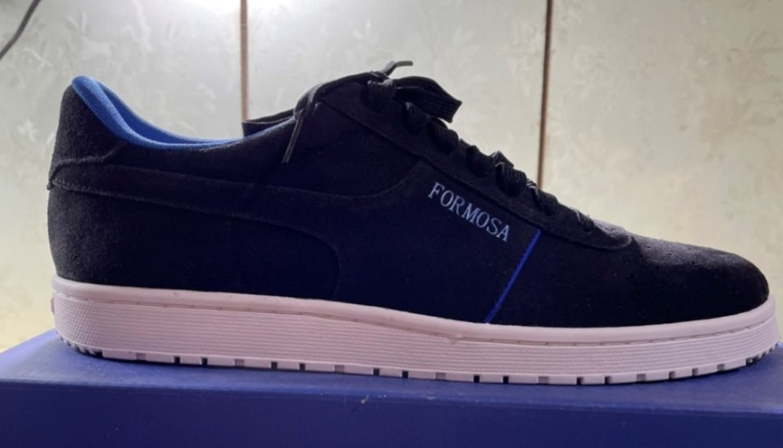

國際期刊論文 (International Journal Papers)
- Lieber Po-Hung Li, Yi-Cin Wu*, Quoc-Thinh Dinh, Wei-Hsuan Huang, Thi-Thu-Hien Pham, Yu-Bin Chen, Chien-Hao Liu, and Cheng-Yang Liu (2025). Compact Fabry-Pérot Fiber-Optic Sensor for Dual Acoustic and Temperature Detection. (Submit). (SCI).
- Lieber Po-Hung Li, Shao-Chun He, Yi-Cin Wu*, Wei-Yu Chen, Wei-Chun Chen, Ying-Hui Lai, and Cheng-Yang Liu, “Miniaturized Fabry-Perot fiber-optic microphone based on capillary tube and hydrogel diaphragm,” Optics and Laser Technology, Vol. 185, pp. 112582, 2025. (SCI, IF=4.6)
- Quoc-Thinh Dinh, Yi-Cin Wu*, Wei-Yu Chen, Yu-Bin Chen, Oleg V. Minin, Igor V. Minin, and Cheng-Yang Liu, “Photonic hook shaping achieved by the micro-nano fiber array based Janus cylindrical metalens,” Physica Scripta, Vol. 99, No. 12, pp. 125553, 2024. (SCI, IF=2.6)
國際研討會論文 (International Conference Papers)
- Yi-Cin Wu*, Kun-An Chiu, Hua-Lin Chen, Wei-Lin Wang, Wei-Chun Chen, Hung-Pin Chen, Yu-Wei Lin, Che-Chin Chen, Fong-Zhi Chen, and Cheng-Yang Liu, “Two-step synthesis of large-area WS2 flakes using hot-wall CVD,” 18th International Conference on Plasma-Nano Technology & Science, Aichi, Japan, 2025.
- Kun-An Chiu, Hua-Lin Chen, Yi-Cheng Li, Cheng-Dian Yan, Yi-Cin Wu*, Wei-Lin Wang, Wei-Chun Chen, Hung-Pin Chen, Yu-Wei Lin, Che-Chin Chen, Yu-Chuan Lin, Cheng-Yang Liu, and Fong-Zhi Chen, “Flow field impact on the synthesis of 2D-WS2 on c-sapphire,” New Diamond and Nano Carbons, Sydney, Australia, 2024.
國內研討會論文 (Domestic Conference Papers)
- 吳翊勤*, 丘坤安, 陳華琳, 王尉霖, 陳維鈞, 陳宏彬, 林郁洧, 劉承揚, 陳峰志, “大尺寸二硫化鎢二維材料之兩階段化學氣相沉積技術開發,” 中國機械工程學會第四十一屆全國學術研討會, 高雄, 台灣, 2024.
- 吳翊勤*, 丘坤安, 陳華琳, 王尉霖, 陳維鈞, 陳宏彬, 林郁洧, 劉承揚, 陳峰志, “兩階段製程合成大尺寸2D-WS2,” 一一三年中國材料科學學會年會, 台中, 台灣, 2024.
- 何紹均, 吳翊勤*, 劉承揚, “應用布拉格光纖光柵之薄膜微振動量測系統,” 中華民國力學學會第四十七屆全國力學會議, 雲林, 台灣, 2024.
- 吳翊勤*, 施鐓湣, 黃英達, 陳柏宏, 邱薆蕙, “不同退火溫度對以磁控濺射製備SiC薄膜之性能研究,” 2022中國機械工程學會第三十九國學術研討會, 苗栗, 台灣, 2022.
- 吳翊勤*, 潘兆鴻, “台灣能源分析與再生能源規劃之研究,” 技術與教學國際研討會, 新北, 台灣, 2022.
專利技術 (Patents)
| 國家 |
發明類別 |
專利名稱 |
專利號 |
生效日期 |
狀態 |
| 中華民國 |
發明 |
超微型電磁強健光纖光學麥克風 |
114128673 |
114年7月29日 |
申請中 |
其他 (Others)
客製化運動鞋
運用機械實現部分自動化流程及剪裁而製成之運動鞋。
